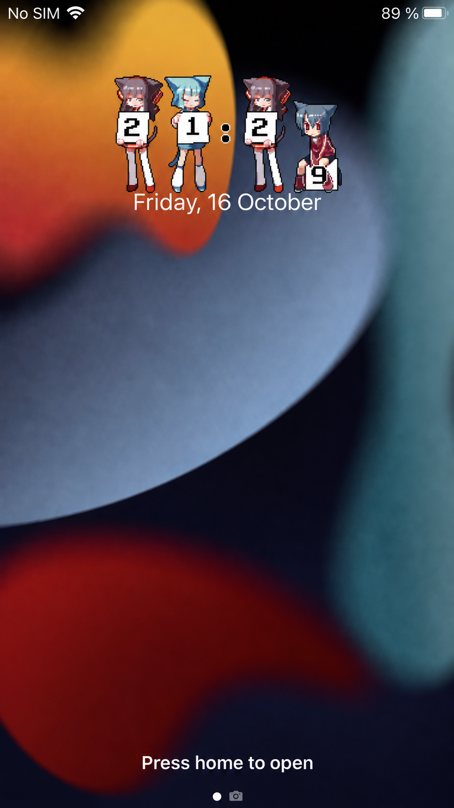
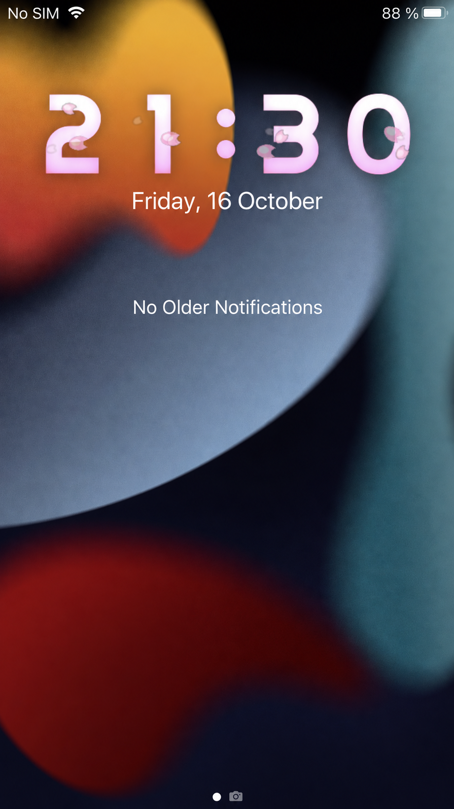
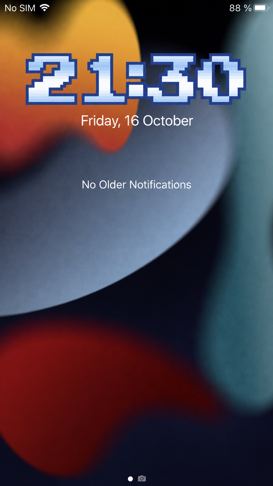
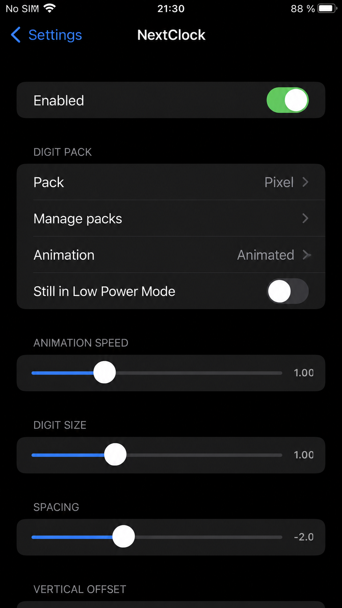
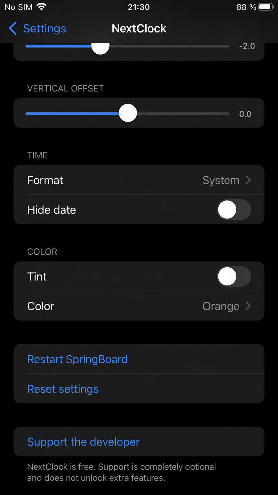
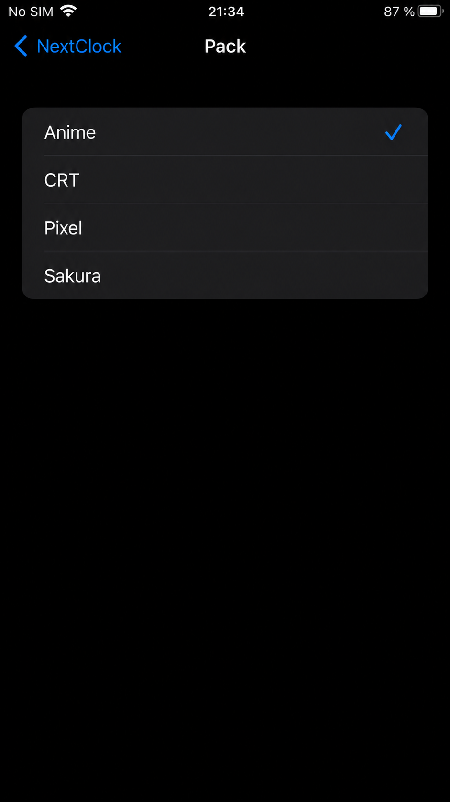

Public beta: iOS 16–17 support is experimental and has not been verified on a device. iOS 15 uses the legacy adapter. A compatible rootless jailbreak and tweak injection are required; TrollStore alone is not enough. Keep version 1.0.1 available for rollback.
Free custom image-based lock screen clocks for rootless iOS 15.0–15.8.8.

Anime clock

Sakura clock

Pixel clock

Pack and animation settings

Time and color settings

Digit pack selection
Make it yours
Static and animated packs, custom pack imports, animation speed, digit size, spacing, vertical offset, time format, optional seconds, date visibility and tint colors.
Rootless iOS 15.0–15.8.8. Includes arm64 and arm64e binaries. Confirmed working on iPhone 7 Plus (iOS 15.8.8), iPhone 12 (iOS 15.3.1), and iPhone 13 Pro Max (iOS 15.1.1). Other devices and iOS 15 versions require testing. The seconds display has been verified on iPhone 7 Plus; it has not yet been separately verified on the other listed devices. English, Ukrainian and Russian localization.
Information
Version
1.1.0 beta 1
Size
14.52 MB
iOS Versions
15.x; 16–17 experimental beta
Updated
October 21, 2026
Architectures
arm64, arm64e
Beta feedback
Send your model, exact iOS version/build, jailbreak, steps and screenshot/video. Export the local report using Settings → NextClock → Export diagnostics. No automatic upload.
Changelog
1.1.0 beta 1 — Public testing
Added an experimental runtime-selected clock adapter for iOS 16–17; not yet verified on devices.
Retained the legacy iOS 15 adapter.
Added Export diagnostics in Settings for tester reports; no automatic upload or notification text collection.
Added the Circuit animated pack with transparent backgrounds and a red colon.
Added beta notices in English, Russian and Ukrainian.
Built the tweak and preferences bundle for arm64 and arm64e.
Version 1.0.1
Added an optional seconds display.
Added arm64e binaries for the tweak and preferences bundle.
Fixed preferences loading on tested arm64e devices.
Localized the seconds switch in English, Russian and Ukrainian.
Reset settings now also resets the seconds option.
Version 1.0.0 — First stable release
First stable release for rootless iOS 15 (arm64).
Custom static PNG and animated GIF/APNG digit packs, including Anime, CRT, Pixel and Sakura.
Pack selection, details, import from folders, ZIP and .nextclock archives, and deletion of imported packs.
Animation speed control and a still-image option for Low Power Mode.
Adjustable digit size, spacing, vertical offset and color tint.
System, 12-hour and 24-hour time formats, with optional date hiding.
Live preferences with English, Russian and Ukrainian localization.
Clock and date visibility follows temporary system status messages, including charging.
Settings reset and a SpringBoard restart button.
Promotional screenshots have been translated into English.